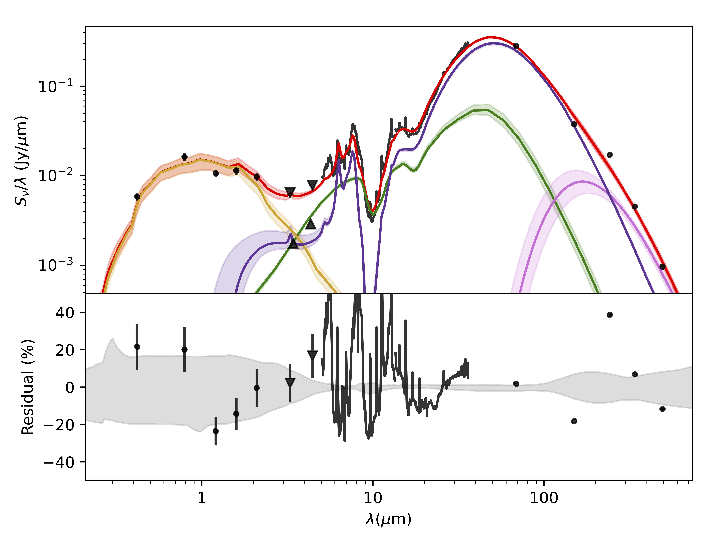

OH Megamaser Galaxies
Ultra-luminous/Luminous Infrared Galaxies, U/LIRGS, dominate the bright end of the galaxy luminosity function in the nearby universe. They are preferentially found in gas- rich mergers and are known for hosting starbursts (SBs) and active galactic nuclei (AGN), frequently in the same system. Approximately 20% of (U)LIRGS contain highly luminous hydroxyl masers (OHMs) [1]. This OHM emission can be used to trace galaxy merger rates and associated processes of the system. OHMs are produced by the amplification of a background radio continuum source and require high column densities of molecular gas and a source of IR pumping radiation. Both SBs and AGN contain the requirements for OHMs, but it is not well understood if the OHM emission is preferentially associated with one or the other.
 To investigate the dominant source of dust and gas heating in gas-rich mergers and how the OH maser emission is related to the properties of the heating source, we fit the spectral energy distribution (SED) of a representative sample of nine OHMGs using clumpyFIT. clumpyFIT uses the GRASIL spectral evolution models by Silva et al. (1998) for the stellar component [2], the CLUMPY dust radiative transfer by Nenkova et al. (2008) to model the AGN component [3], and two separate families of models for the ISM dust emission; the first by Draine & Li (2007) and the second by Siebenmorgen & Krugel (2007) [4].
Sources:
[1] Darling J., Giovanelli, R., 2002, ApJ, 124, 100–126.
[2] Silva L., Granato G. L., Bressan A., Danese L., 1998, ApJ, 509, 103
https://adlibitum.oats.inaf.it/laura.silva/grasil/modlib/modlib.html
[3] Nenkova et al. 2008a, ApJ, 685, 147 | Nenkova et al. 2008b, ApJ, 685, 160
https://clumpy.org/model-description/index.html
[4] Draine B. T., Li A. 2007. ApJ, 657, 810 | Siebenmorgen R., Krügel E., 2007, A&A, 461, 2, 445-453
Image Credit: Mrk0273 (IRAS13428+5608) | NASA, ESA, the Hubble Heritage (STScI/AURA)-ESA/Hubble Collaboration, and A. Evans (University of Virginia, Charlottesville/NRAO/Stony Brook University)